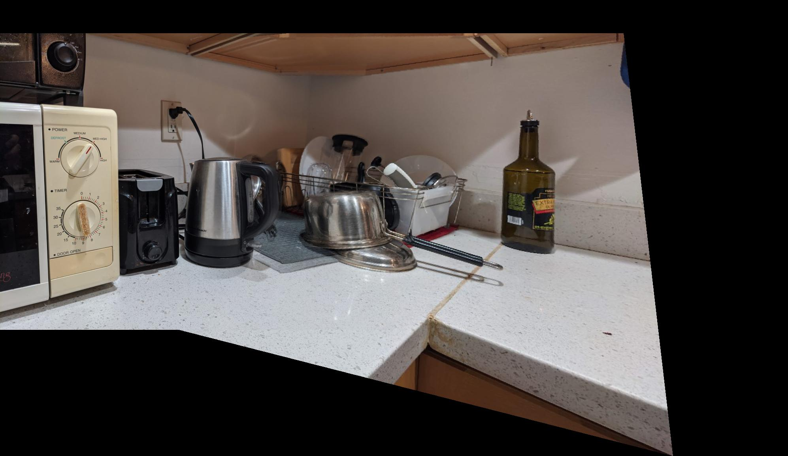
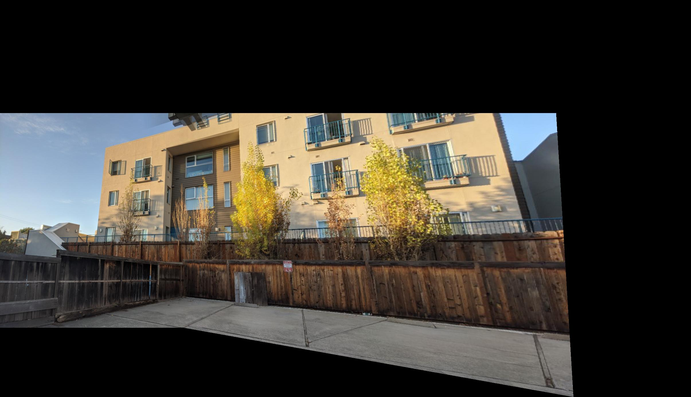
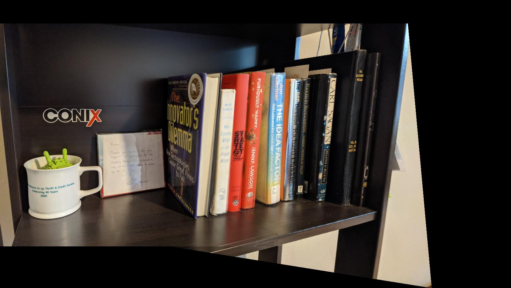

Romil Bhardwaj
The first task is to shoot the photos. It is important to ensure that the transforms between the two images are projective, so we need to avoid moving the camera (translation) and only rotate the camera on its axis. I used AE/AF lock to ensure the photos are taken with the same exposure settings. After taking the photos, the homographies define the transform p' = Hp. To find H, we need to setup a system of equations of the form Ah=b. Each point correspondence provides one equation, so we need atleast 4 points. For each image, I collected 10 correspondences, and then used np.linalg.lstsq() to solve the equations with least squares method. Here are my input images and their annotated points.


After computing the homographies, it is possible to rectify the images to make their planes frontal-parallel by creating a correspondence with a square's coordinates. Here are some examples of rectification for my images:


Once we get a homography between two images, we can compute mosaic which combines the two images seamlessly. I warped the second image onto the first and blended the two images by using an alpha of 1 for the first half of the image, then linearly decreasing the alpha from 1 to 0 for the second half of the image.


First step in auto-mosaicing is to find the corners features in an image. This serves as the basis of feature points which we will filter, match and then get a homography from. We get these points using the harris edge detector.
For my example, I got ~18000 corner pts, which basically covered my entire image.
Because the cost of matching features is a function of the number corner points that must be matched, we reduce the number of points to match with Adaptive Non-Maximal Suppression as described in the MOPS paper.
I used a start radius of 10px and incremented the radius by 7px at every iteration of ANMS. I used this to reduce the number of points from 18000 to ~500:
After reducing the number of points, we must match them to get a point correspondence between the two images. We do so by extracting 40x40 patches, blurring them with a gaussian kernel of sigma=3, resize it to 8x8 and compute the sum-of-square-distances for each pair of patches between the two images.
Once we have an ordering of patches by their SSD, we compute the ratio of the 1-NN and 2-NN patches. If the ratio is less than 0.2, we add the two points to the correspondence set.
After feature matching, these are the final set of candidate points.
Finally, to get the best homography, we use 4-point RANSAC. RANSAC randomly picks 4 points, computes their homography, and using this homography transforms all points and computes the number of inlier points produced by the homography. The homography with the most inlier points is selected as the final transform. My experiments use an episilon of 2px to classify inliers vs outliers.
Here are the results of auto-stitching. Please zoom in to see the differences. Kitchen and Outdoors example performed well, but the indoor shelf example is a bit blurry. I believe it might be because of the poor contrast in most of the image which makes feature matching hard.
|
 |
| Manual Mosaic | Auto Mosaic |
|
 |
| Manual Mosaic | Auto Mosaic |
|
 |
| Manual Mosaic | Auto Mosaic |
Computing homographies is really cool! It allows you to change the perspective of the image. Homographic transforms probably have a big role to play in computer graphics too, where the camera and its position must be manipulated given a fixed image/texture on surfaces.